About Me
Hello! I'm a software developer working remotely as a contractor in the Bioinformatics and Biostatistics Core of Moffitt Cancer Center.
I enjoy learning all types of new tech, but have the most experience working in Unity3D with C#, doing data analysis in Python, and front end visualizations in JavaScript. In my spare time, I like to write neoclassical music, rock climb, and read sci fi books (mostly Brandon Sanderson books lately).
Education:
| B.S. in Computer Science |
University of South Florida |
Tampa, FL |
| B.S. in Mathematics |
Florida Gulf Coast University |
Fort Myers, FL |
| A.S. in Engineering Science |
Broome Community College |
Binghamton, NY |
Languages
- C#
- C++
- Python
- JavaScript
- Cg (HLSL variant)
Technology
- Unity3D
- Blender3D
- Rigify
- DirectX 9 and 11 shaders
- NumPy + SciPy
- MatPlotLib
- D3.js
- Bootstrap
- GIMP 2
- Cubase 9 + Audacity
- Win7 + Ubuntu
Web demos:
Word Search Game
D3 Graph Analysis
Teamwork and customer service:
While in college, I taught 7-10 classes / week as a group fitness instructor, tutored calculus + physics, and worked as a challenge course facilitator.
Amblyopia Eye Therapy Game
This is a game I made as a birthday present for my sister. She has ambylopia, a neurological problem where the brain tries to ignore input from one eye. Inspired by LazyEyeGames.com, I designed the game to be played with red-blue glasses. The red and blue elements are only seen by one eye at a time, which trains the brain to use both eyes simultaneously. In testing, I found that yellow and purple colors looked most natural through the glasses, so I used those for UI elements.
Try WebGL demo!
Features:
- 4 game modes
- Adjustable 4-tone color palette
- Platforms: Android (with keyboard), WebGL, Windows, Linux
Gallery:
Figure 2: Lava escape mode
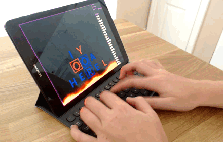
Figure 4: Settings menu
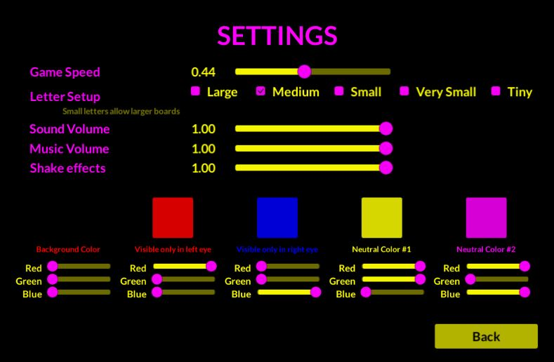
Design choices:
I loaded a file with 235,886 words into a HashSet, a nice .NET collection with an expected O(1) lookup complexity. Players can also add their own words by pressing SPACE instead of ENTER.
At first, I blended all the game modes together, adding code to methods like "if (mode == MODE.zombieOutbreak) { DoCoolFunction(); }". This quickly got out of hand, so I created a class for each game mode. Each game mode inherited from the same abstract class.
Figure 5: Game mode class hierarchy
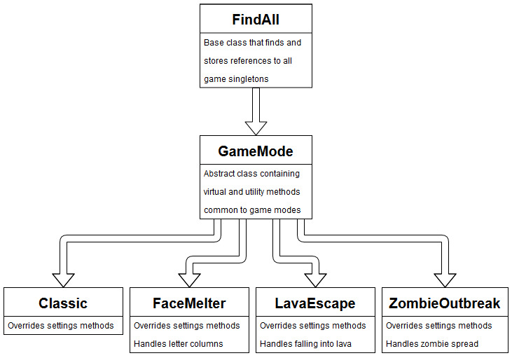
UI/UX with Events:
I used Unity's built in UI system for the menus and created a collection of scripts under a namespace called SimpleUI. The methods knew nothing about the rest of the project, but could communicate using Unity events. I chose this approach over C# delegates in order to be able to connect the events in the Unity3D editor.
/*
Connect these events in the editor to other components
*/
public IntEvent buttonAction;
public UnityEvent buttonHover;
public UnityEvent buttonClick;
/*
Send event messages from UI components to other scripts
*/
// Sends int as action code
public void OnButtonAction(int actionID) {
buttonAction.Invoke(actionID);
}
// Sends hover event
public void ButtonHoverEvent() {
buttonHover.Invoke();
}
// Sends click event
public void ButtonClickEvent() {
buttonClick.Invoke();
}
Conclusion
It was a great experience working on this project. Technology can be a powerful new tool for dealing with medical conditions and games can make it fun for users.
Music Theory Graph Analysis
JavaScript
CSS Animation
SVG
jQuery
D3.js
This is a tool for composers to use when starting new pieces. It takes piano input and compares those notes to a database of modes (scales), plotting the results as a force directed D3 graph.
Try app!
Data analysis:
The app takes a set of notes as input and compares those notes to a database of 92 music modes in all 12 keys. There are currently 9 factors defining how "similar" modes are to each other, and these 9 factors can be weighted using sliders.
Factors range from objective measures such as "how many notes are the same?" to estimating how sad or bittersweet modes will be based on the intervals contained.
Modes themselves are stored as objects with a boolean array of size 12 defining whether notes are included or not.
D3 visualization:
D3.js is a great JavaScript library for creating data-driven SVG visualizations. The flexible graph setup shown below let me quickly get the graph working and focus on extra features like adding a function that detects common chords in the selected mode and displays them to the screen.
// (Previous code...)
// Add nodes to SVG
node = svg.append("g")
.attr("class", "nodes")
.selectAll("nodelist")
.data(graph.nodes)
.enter().append("g");
// Bind drag and drop functions
node.call(d3.drag()
.on("start", dragstarted)
.on("drag", dragged)
.on("end", dragended));
// Attach circles to nodes to make them visible
// Circle colors and sizes are determined by node groups
node.append("circle")
.attr("class", "node-circles")
.attr("r", function(d) { return groupRadius(d.group); })
.style("fill", function(d) { return color(d.group); })
.style("stroke", function(d) { return (d.type == 1) ? "#ffff00" : "#dddddd"; });
// Add labels to nodes
node.append("text")
.attr("class", "node-labels")
.text(function(d) { return d.id; });
// Tell simulation what the nodes are
simulation
.nodes(graph.nodes);
// (Code continues...)
Gallery:
Figure 1: Running a search
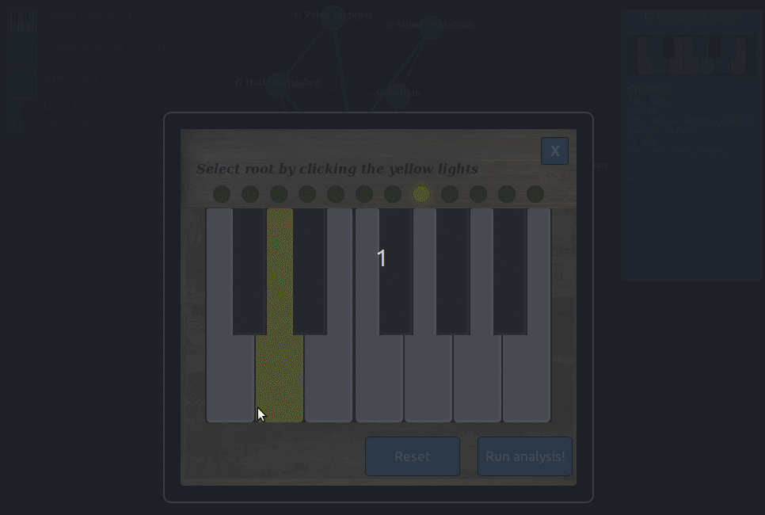
Figure 3: Settings (modal window)
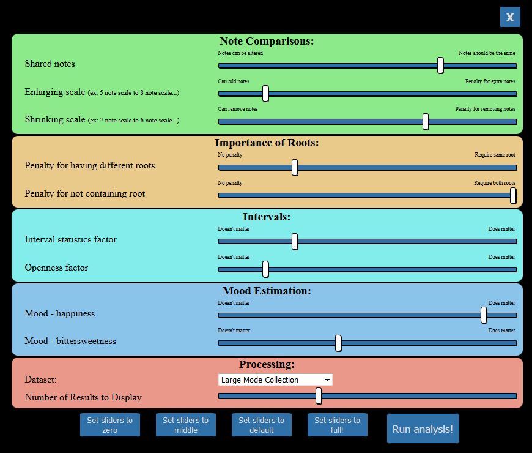
Figure 4: A lovely CSS piano with notes selected
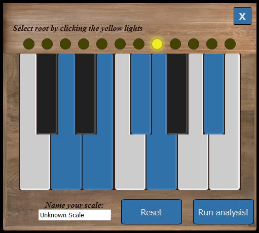
MONA (Multi-Omics Network Analysis)
Python
R
Multi-Threading
NumPy
SciPy
Pandas
RShiny
MatPlotLib
MONA was my first project at Moffitt Cancer Center. I began as an intern, and continued work after accepting a software developer position. Currently, we are doing sensitivity analysis and preparing the manuscript for publication.
MONA is a Python app that creates networks of differentially expressed "omics" data. It inputs experiment data and combines that with a known universe of interactions, using correlations above a threshold to add speculative network edges. To provide an indication of confidence, the algorithm runs multi-threaded permutations to approximate a null distribution.
My contributions:
- Adding features
- Optimization
- Running test cases
- Generating statistics reports and discussing them with statisticians
- Flowcharts to explain algorithm process
For the data visualization, I decided to use the Shiny framework. RShiny is useful for quickly creating interactive web applications that incorporate R functionality. I experimented with several different visualization packages before settling on the visNetwork package because the graphs were interactive.
Gallery:
Figure 1: Graph construction
Figure 2: Node selection
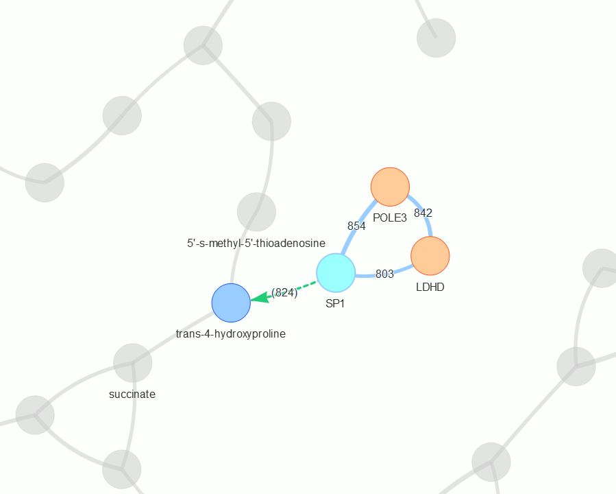
Figure 3: Pathway enrichment map
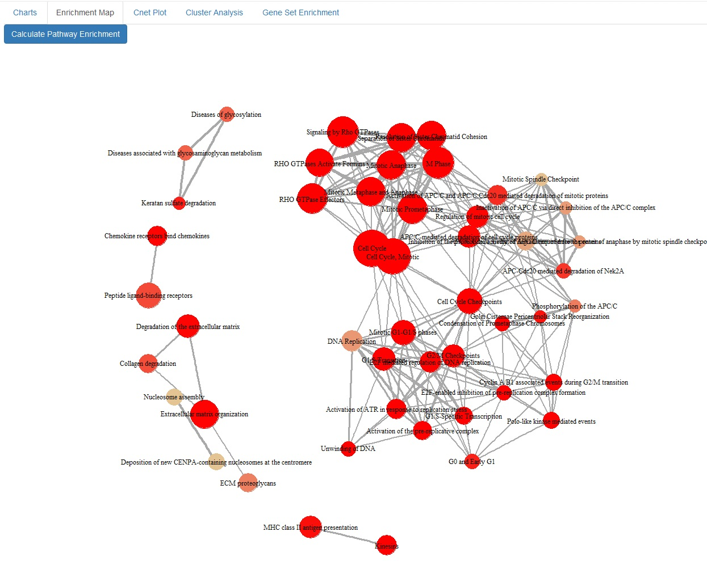
Figure 4: Pathway enrichment chart
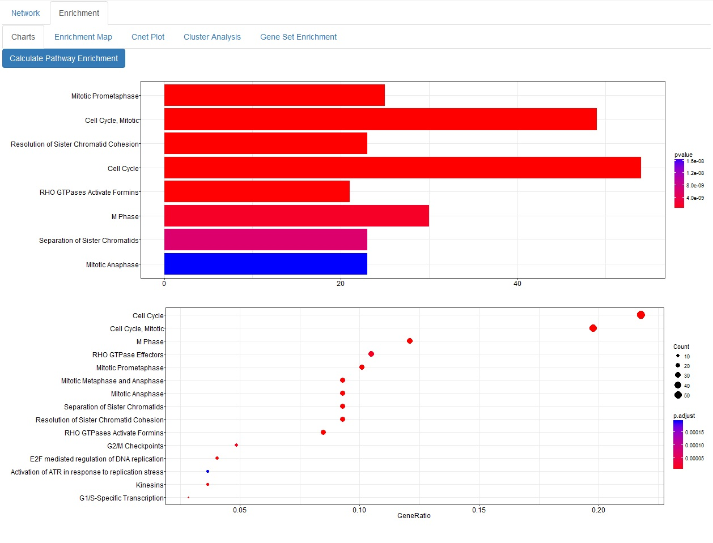
NOTE:
This project is property of Moffitt Cancer Center and is currently unpublished. I'll update this after publication and add the link to the paper!
Real-Time Dynamic Water
C#
Cg (HLSL variant)
DirectX 11
Blender3D
Unity3D
This is a water system I made for boss battles in my action game. It adds a layer of complication to player movement and gives extra impact to whatever the bosses do. Attacks that the player dodges can still be a problem due to the waves they create.
Features:
- Waves created from sources:
- Transverse ocean waves
- Large objects moving
- Impact events
- Special ripples for extra huge impacts
- Special handling for shallow water flow to minimize edge artifacts
- Tesellated gerstner waves with turbulence that reacts to depth and water motion
- Cg surface shader:
- DirectX 11 tessellation
- Gerstner wave vertex displacement
- Depth-based opacity
- Automatic foam + whitecaps
Gallery:
1. Gentle gerstner waves

2. Choppy gerstner waves with whitecaps

3. Creating waves

4. Ocean waves

5. Ripples for large impacts

6. Interaction with land

Design choices:
The core simulation is done in C# with a grid-based model that handles the large-scale waves. It combines input from moving objects with transverse waves, and handles flow between neighboring grid points. It outputs depth and water force for any point, and also calculates extra data like how "turbulent" each point is, which it sends to the shader via vertex colors.
The mesh was dense enough for gameplay, but I wanted more detailed visuals. So I added DirectX 11 tessellation to the shader and wrote a vertex displacement function that overlaid 6 gerstner waves onto the tessellated mesh. The gerstner waves have different amplitudes and lacunarities based on the "turbulence" set by the C# simulation. This allowed me to keep shallow areas relatively gentle, and have the water become choppy for a while after large waves.
Below is the vertex function used to create a single gerstner wave:
// Returns vertex displacement due to gernster wave
inline float3 gerstnerDisplacement(float2 vertPos, float2 D, float W, float Q, float T, float amplitude)
{
float trigVal = dot(W * D, vertPos) + T * _Time.x;
// Use sincos() as it's faster than calling both sin() and cos()
float sinVal, cosVal;
sincos(trigVal, sinVal, cosVal);
return amplitude * float3(
Q * D.x * cosVal,
Q * D.y * cosVal,
sinVal);
}
Hair Physics
I had previously experimented with modeling hair in Blender for my Unity3D game, but as the combat became more action-packed, I wanted the hair to act as a flag and emphasize the movement. So I created a simulation for it and used line renderers to draw the hair along the simulated points.
Features:
- Gravity
- Friction
- Momentum dispersed through strands
Gallery:
Figure 2: More hair physics!
Displacement Shaders for Hurricane Winds
Cg (HLSL variant)
C#
Blender3D
Unity3D
This is a set of shaders for trees blowing in harsh winds. They use vertex displacement in order to simulate both large-scale bending and small fluctuations.
In order to allow for large numbers of trees with minimal draw calls, I decided to preserve static and dynamic batching. This meant that the mesh data and material settings had to be identical for each type of tree.
This created some new limitations. The problem was almost stateless, with the only inputs being the unmodified vertex positions in local space, world space positions, and the time since startup. To get around this, I made every function deterministic and continuous, while adding as many factors as possible in order to break up the motion.
Features:
- Inputs for wind direction and force
- "Normal" and "Extreme" settings allow control over how much the main tree trunk bends
- Automatic wind variations based on user settings
- Works with both static and dynamic wind inputs
- Custom LOD system in C#
Gallery:
Figure 1: Small fluctuations
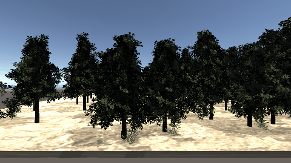
Figure 2: Object-space bending (bad!)
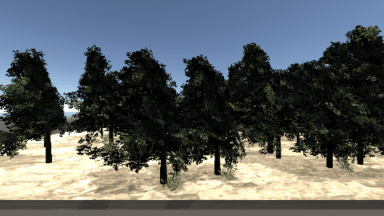
Figure 3: Adding world-space variation
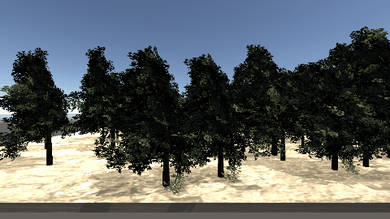
Figure 4: Extreme wind

Procedural Animation
I created this project to support my hobby game in order to maximize the impact and weight of animations. The Blender3D plugin Rigify helped a lot with animation, but I wanted to use procedural techniques on top of it to make characters lean into momentum changes, and to react dynamically when hit from any angle.
Features:
- Fast, smooth approximation of foot placement for spiders
- Impact reaction system for spiders and other monsters that handles impacts from all angles
- Momentum shifts usable for all actors (humanoids, spiders, monsters...)
Gallery:
Figure 1: Spider weight adjustment
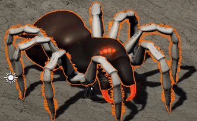
Unity3D Action Game
C#
UnityScript
Cg (HLSL variant)
GIMP 2
DirectX 9 and 11
Rigify
Blender3D
Unity3D
This is a hobby project I've been working on in my spare time. The basic combat is inspired by Dark Souls and it incorporates technology used in my other projects, like the dynamic water.
Features:
- AI includes FSM and attack combo system
- Cg shader library using DX9 and DX11
- Player controls with dodging, attack combos, stamina, poise, and custom physics controller
- Custom hit detection system using geometry rather than ray traces (for increased speed and scalability)
Genetic Algorithm Environment
C++
Visual Studio 2015
Doxygen
This is a set of scripts designed to allow users to set up a new genetic algorithm and start writing the fitness function within 15 minutes.
The main class controls the fundamental genetic algorithm workflow, implements crossover and mutation phases with flexible settings, and provides easy-to-use static libraries for common GA methods. Everything is commented in Doxygen style so that users don't have to open the code.
Features:
- Example Mutation settings
- Toggle a random bit
- Toggle 20 random disconnected bits
- Mutate 1 random byte by giving each bit a 78% chance to toggle
- Mutate between 1 and 4 random values, giving each of their bits a 22% chance to toggle
- Give every bit a 1% chance of toggling
- Crossovers
- COPY - Volatile data is directly copied from elite parents
- SHUFFLE - Volatile data is copied from 2 elite parents, with each byte being chosen from a random parent
- N-SPLIT - Volatile data is copied in (N + 1) sequential chunks from 2 elite parents
- Encoding Supported
- Any primitive
- Numeric vectors
- Boolean vectors
- Input/Output in binary and CSV format
- Tested on:
- Knapsack problem
- Sudoku puzzle
- Template derived class for quickly setting up new GAs